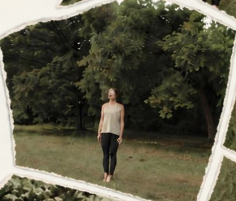

Art, movement, walking, sound and thoughtful conversation. Different ways to slow down, reconnect and explore how we experience ourselves, each other and the world we create.
Innerscapism brings together creative experiences and human-centred thinking to make space for what often gets lost in the rush of everyday life.
Creative practices for slowing down, paying attention and exploring what matters. Through art, walking, yoga, sound and shared experiences, we create room for curiosity, reflection and connection.
The environments, products and systems we create shape how people live and work. Through human-centred design, creative facilitation and systems thinking, we explore how to build products, technologies and working environments without losing sight of what makes us human.
For product teams, organisations and people building what comes next
Or when nothing is, and you'd simply like to notice more.

You might be
navigating transition
feeling creatively stuck
needing space to reflect
recovering from an intense period
wanting to reconnect with yourself
looking for more meaningful connection
simply wanting to slow down and pay attention
The Experiences
Four ways in.
For individuals, small groups and gatherings in Lisboa, Porto and online. No artistic skill needed. Just curiosity.
01
InnerSessions
Make space to reflect.
A one-to-one session using art-making, prompts and conversation to explore what's shifting in your life. For moments when something is changing and you need somewhere to put it, or a new sense of direction.
1:1 · 60/90 min · In person in Lisboa or Porto, or online
02
InnerWalks
A different kind of walk.
A slow, guided walk where we stop to look closely and draw what we notice. Let your thoughts catch up with you.
1:1 or small groups (up to 8) · 2 hours · Lisboa or Porto
03
InnerTables
Making room for conversation.
An intimate evening of food, drawing and the questions you don't usually get to ask. The table as a space for curiosity.
Groups of 6–10 · Up to 3 hours · Lisboa or Porto
04
InnerReset
Move. Breathe. Make. Listen.
Yoga and breathwork flow into drawing and painting. The body leads, creativity follows. We close with singing bowls and stillness: you lie down, listen and let things settle. Not another yoga class.
Small groups or 1:1 · 2 hours · Lisboa or Porto
Dates and times vary. Send a message about the Experience you're curious about, and we'll share what's coming up or find a time that works for you.
“This was, by far the best walk I’ve been to in a LONG time. Great to walk and see the beach and water. People were awesome and inclusive and time flew by. Thanks to the hosts for supporting this kind of fun.”
InnerWalks participant
“It’s my second time going to the walk and I really love the vibe, people, locations and conversations that we have”
Returning InnerWalks participant
“Filipa es una gran anfitriona y siempre nos hace sentirnos bien a los que asistimos a sus actividades.”
Alicia
Work & Systems
For teams and organisations.
Two different ways to work together, built on the same attention to people.
ConsultingInnerware
Human-centred design and consulting.
Remote UX, product strategy and design system support for teams building digital products and services.
To your attention. To your curiosity. To your body. To place. To each other. To the parts of yourself that become quieter when life gets busy.
Sometimes, making space for what makes us human begins with slowing down, making something with our hands or paying attention to the world around us.
Sometimes, it begins by questioning the products, technologies and systems shaping our lives.
Innerscapism explores both.
Reminder: the world is still slower than your screen.
A space to explore, reflect and create.
Whether you're looking for a creative experience, a new perspective on your work, or a collaborator to help you rethink a product or system, let's start with a conversation.